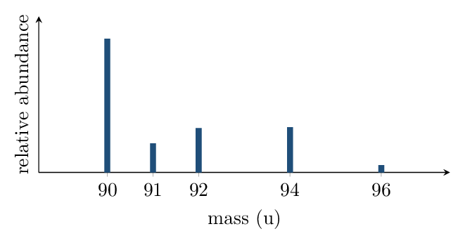

Directions & data
Answers without reasoning earn no credit here — this sheet trains
the justification sentences the FRQs grade. Keep every explanation to one or
two sentences built on evidence.
1. The mass spectrum of zirconium:

- How many naturally occurring isotopes does Zr have? 5
- Without computing, is the average atomic mass closer to 90 or 93? Justify from the spectrum.
- Write — but do not evaluate — the full expression for the average atomic mass.
- \(\ce{^{90}Zr}\) and \(\ce{^{94}Zr}\): identical, in one column; different, in the other. Fill both.
2. Antimony has two isotopes: \(\ce{^{121}Sb}\) and \(\ce{^{123}Sb}\). The
periodic table lists Sb as 121.76 . Which isotope is more abundant,
and approximately what fraction is it? Reason without long
computation.
3. In the box below, draw a particulate diagram of a mixture of
diatomic element \(X_2\) (filled circles) and compound \(XY\) (filled–open
pairs). Include at least 3 particles of each.
Any drawing with \(\ge3\) filled–filled pairs and
\(\ge3\) filled–open pairs, particles separated (not bonded into one lattice),
roughly uniform distribution.
4. A sample contains only \(\ce{H2O}\) molecules. A student claims it
must be a mixture because it contains two different elements. Evaluate the
claim.
5. Chlorine gas is made of \(\ce{Cl2}\) molecules built from
\(\ce{^{35}Cl}\) (75.8%) and \(\ce{^{37}Cl}\) (24.2%). The mass spectrum of
\(\ce{Cl2}\) (molecular ions) shows peaks at 70, 72, and 74 u. Explain where the
72 u peak comes from.
Spiral review • Block 1 • mole drill
- Moles in 8.0 g of \(\ce{O2}\): 0.25 mol
- Mass of \(6.02\times10^{22}\) atoms of Na: 2.3 g
- % C in \(\ce{CH4}\) (nearest whole): 75%
- Empirical formula of \(\ce{N2O4}\): \(\ce{NO2}\)
- An element's spectrum has one peak. What does that tell you? only one stable isotope